New World Tutorial
This tutorial teaches you how to create a new world from scratch in the C4 Engine and add all of the essential pieces for a typical game level.
To enlarge any of the screenshots below, click on the thumbnail icon below the image.
Step A: Open the World Editor
To open the World Editor with a new empty world, select New World from the C4 Menu or type Ctrl-N when any user interface window is open. If you're running the demo game, you may want to hit Escape after starting the engine to clear the main menu first. (Otherwise, it will continue rendering behind the World Editor.) If no user interface windows are open, you can always hit the tilde key to bring up the Command Console.
When a new world editor window is opened, there is an empty scene containing nothing except the infinite zone, as shown in Figure 1. Every world has an infinite zone that directly or indirectly contains all of the other nodes that will ever exist in the world, and it cannot be deleted.
{kind=link}
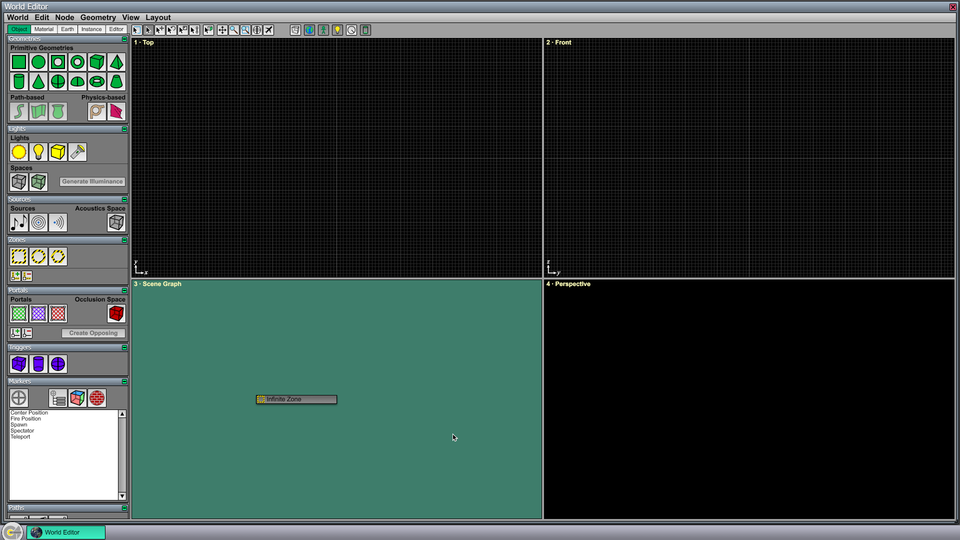
Step B: Draw a Ground Plane
On the left side of the editor window, there is a column of tool pages. All of the tools used for creating and modifying nodes in the world are found here, and they are divided into five groups under the tabs at the top of the column. Right now, we are going to use a tool from the Geometries Page at the top of the column under the Object tab.
Click on the Plate Geometry tool in the upper-left corner of the Geometries Page. (The name of each tool will show up if you hover over it for a second.) This will change the current tool to one that creates new plate geometry nodes. In the Top viewport, click, drag out a rectangular shape, and then release the mouse button to add a new plate geometry to the world. (It doesn't matter exactly where you click or how large the rectangle is because we're going to update it later to make sure everyone who follows this tutorial gets the same results.) Your editor window should now look like the one shown in Figure 2.
{kind=link}
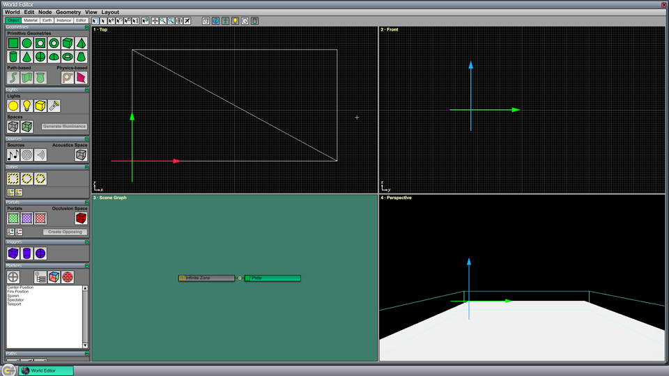
Step C: Save the World
Before we continue, this would be a good time to save the world so we don't have to worry about it later when we want to play it. To save the world, type Ctrl-S. Since it hasn't been saved before, this will cause a dialog to appear where you can specify the name for your new world. After this first time, typing Ctrl-S will simply save to the file that has already been established.
Step D: Change the Default Material
The default material in a new world is simply a plain white color. Since it was the only material available, it has been applied to the new plate geometry that we created. We can change it by opening the Material Editor and assigning some texture maps.
Click on the Material tab at the top of the column of tool pages. The Material Page will now be shown at the top of the column, and the only material in the list will be selected. Double-click on it to open the Material Editor, which is shown in Figure 3.
{kind=link}
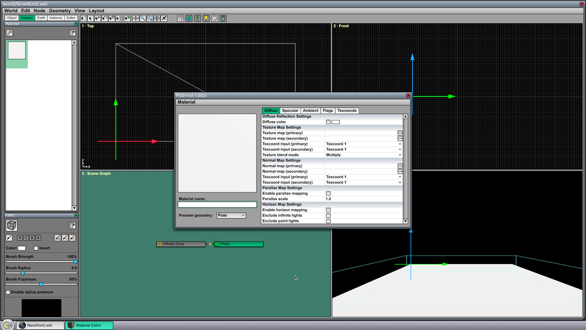
In the setting named Texture map (primary), click on the button with three dots inside on the right side of the window. This opens a dialog that lets you select a texture map. Navigate to the Data/The31st/terrain directory, and select Grass3.tex. This applies a diffuse texture map to the material.
In the setting named Normal map (primary), use the same procedure to select Grass3-nrml.tex. This applies the normal map corresponding to the grass texture to the material. Of course, you can choose a different pair of texture maps if you'd like, as long as the diffuse and normal maps are matched to each other.
Now click in the Material name box in the lower-left corner of the Material Editor and enter a name such as "Ground". Save the material by typing Ctrl-S, and you will see the modified material applied in the World Editor, both in the Material Page and in the perspective viewport, as shown in Figure 4. Close the Material Editor by clicking the X in the upper-right corner of the window or by typing Ctrl-W.
{kind=link}
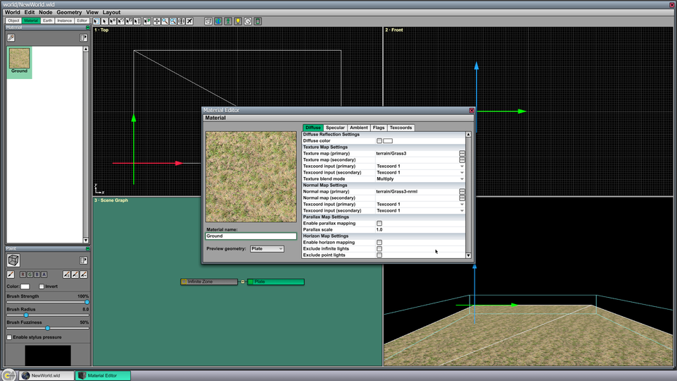
Step E: Resize the Plate Geometry
So that everyone following this tutorial gets the same size ground plane, we will manually change the position and size of the plate geometry. Click on the Editor tab at the top of the column of tool pages, and find the Transform Page. If the plate geometry created earlier isn't still selected, then switch to the Select Tool (by using the shortcut key 1) and click on the plate in the top, scene graph, or perspective viewport. With the plate geometry selected, its position and size will appear in the Transform Page.
Under the Position heading, set both the X and Y coordinates to −20. Under the Size heading, set both the X and Y sizes to 40. This will change the plate geometry to a 40×40 square centered on the origin.
Use the mouse wheel to zoom out in the Top viewport until the whole plate is visible. In the Perspective viewport, hold in the right mouse button and press the S key to move the camera backward until more of the plate is visible. (The camera can be moved around the perspective viewport in this manner by using standard first-person shooter controls.) The editor should now look like the screenshot in Figure 5.
{kind=link}
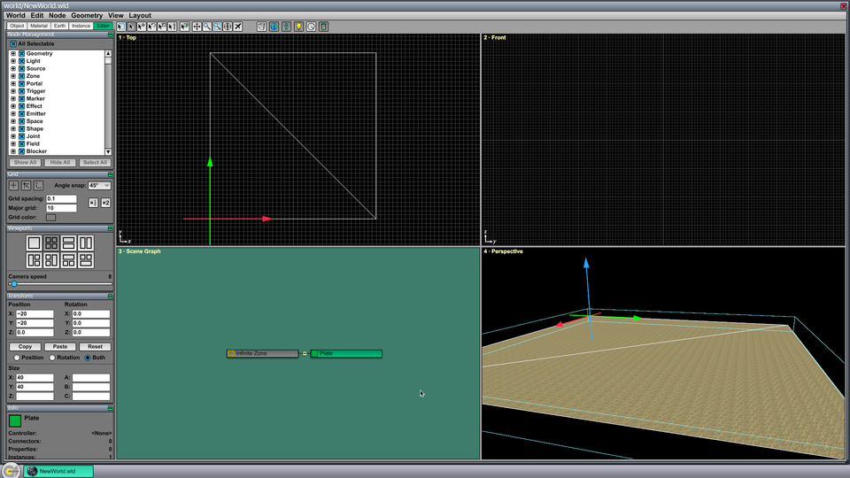
Step F: Add a Clear Color
By default, the engine does not take any action to reinitialize the frame buffer when one frame is done rendering and a new frame is begun. This is fine for indoor scenes because you can be sure that the whole screen will be covered by walls, the floor, the ceiling, etc. But for outdoor scenes, it would mean that the previous contents of frame buffer remain, and you see smearing from one frame to the next. There are two ways to make sure that everything is overdrawn for every frame, using a clear color and using a skybox. We will assign a clear color to the world now and add a skybox later.
The clear color applies to the whole world, so it is a property associated with the infinite zone. To set the clear color, double-click on the Infinite Zone node in the Scene Graph viewport to open the Node Info window. (You can also select the node anywhere and type Ctrl-I.) Then click on the Properties tab in the Node Info window. A list of properties available for the currently selected node is displayed, and one of those properties is named Clear Color. Select the Clear Color property and click the Assign button. (You can also double-click on the property to assign it.)
Under the Property Settings for the newly assigned Clear Color property, click on the black box for the Clear color setting. This opens a color picker dialog, as shown in Figure 6. You can choose whatever clear color you want, but we suggest using red, green, and blue values of 106, 129, and 135 because they will match the skybox that we're going to add to the world later. Once the color has been set, click OK for the color picker, click OK for the Node Info window. Your clear color will now appear in the background of the Perspective viewport.
{kind=link}
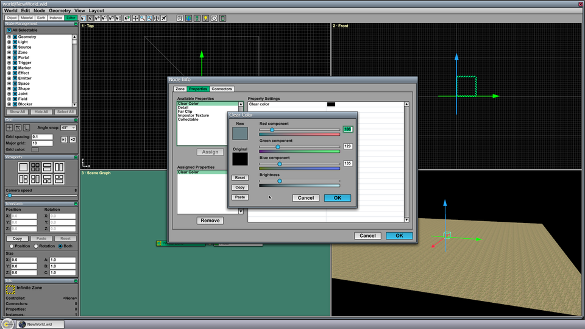
Step G: Expand the Infinite Zone
Because we selected the Infinite Zone in the previous step, this initially-hidden node has become visible. The infinite zone is supposed to contain everything in a world, but it starts out as a 1×1×1 cube that we can now see as a box with a green striped outline. For best performance, we need to resize this zone so that it's larger than everything else.
Select the Resize Tool at the top of the World Editor window or use the shortcut key 4. Little white handles will appear on the zone's boundary, and these can be dragged to change the size of the zone. Click on the lower-left and upper-right handles in the Top viewport and drag them outward until the zone is larger than the plate geometry with some extra padding. In the Front viewport, drag the top and bottom handles in the center of the box and drag them so that the zone has some height and depth. Your world should now look like the screenshot in Figure 7.
Once the zone is resized, type Ctrl-H to hide and unselect the infinite zone.
{kind=link}
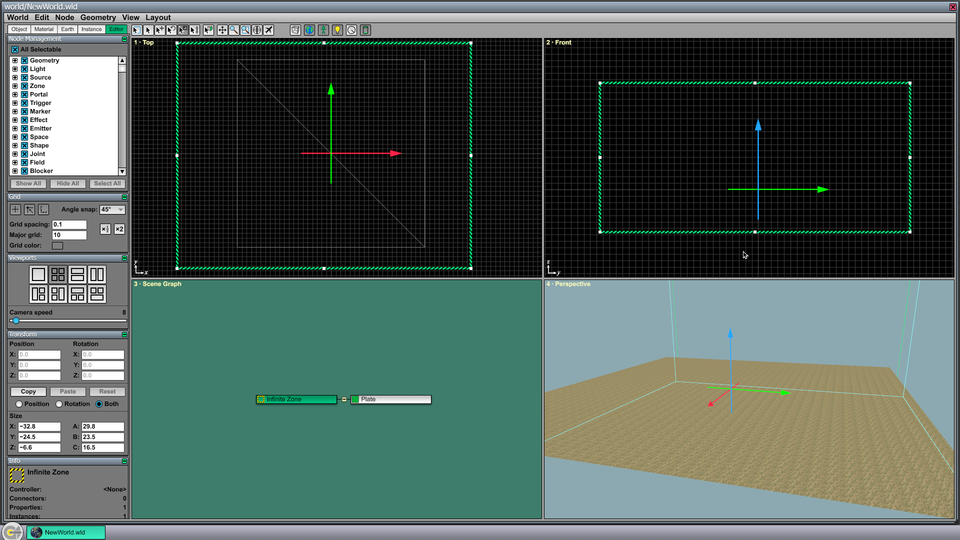
Step H: Play the World and Return to the Editor
At this point, we've done enough that we can play the world in the engine without seeing a smeared background. The World Editor includes a mechanism for playing the current world and then returning to it in the editor, and it's good to get used to it as early as possible.
Type Ctrl-P to play the world in the engine. This automatically saves the world first, so there's no need to type Ctrl-S first. The World Editor is closed, and the world you were editing is played in the exact same manner that it would be played in the final game. When you play this world, you will see the ground plane that we created above and the clear color that we established.
The demo game contains code for a spectator camera that can be flown around using the W, S, A, and D keys. Moving the mouse changes the direction in which the camera moves.
When you're ready to return to the editor, hit the tilde key to open the Command Console and type Ctrl-Shift-P. This causes the current world to be unloaded and the world most recently played from the World Editor to be re-opened.
Step I: Add a Physics Node and Spawn Location
It's possible to walk a character around in this world (using the demo game) after a couple more nodes are added.
First, in order for any rigid body physics to be applied, a Physics Node needs to be created. The existence of this node tells the engine to use the built-in physics system, and it doesn't matter where we put it, as long as it's there. Switch to the Object tab of tool pages if it's not already selected, and use the mouse wheel to scroll down to the bottom where you will find the Physics Page. Select the Physics Node tool and click in the Top viewport to create a new physics node. It can go anywhere, but we choose to place it outside the ground plane so it's easy to find and doesn't get in the way of anything else. The editor window should now look like Figure 8.
{kind=link}
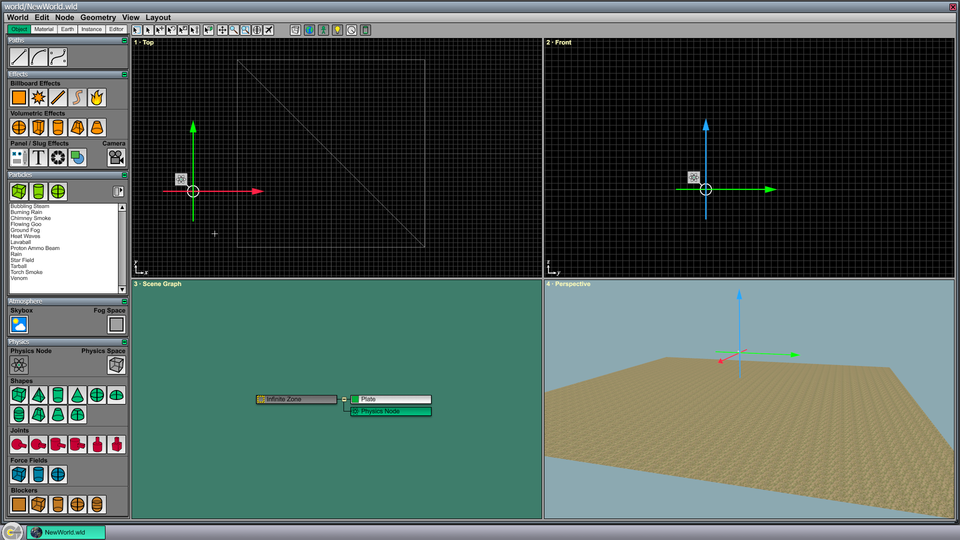
Second, we need to tell the demo game where to spawn the player character. We do this by placing one or more Spawn locators in the world. (This is a custom type of locator marker that is defined by the demo game.) Scroll the tool pages up until you find the Markers Page, and select the Spawn locator from the list. In the Top viewport, click near the center of the plate geometry that serves as the ground plane. The editor window should now look like Figure 9.
{kind=link}
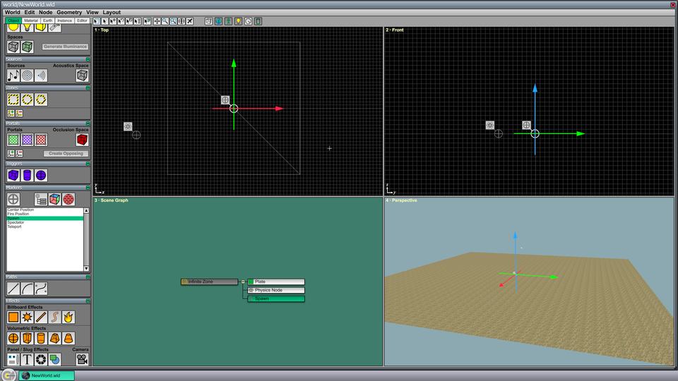
Type Ctrl-P to play the world. You can now use first-person controls to move the player around on the ground plane. When you're finished, hit tilde and type Ctrl-Shift-P to return to the editor.
Step J: Add a Substance and Physics Space
There are two things you may have noticed when walking around the world. First, there were no footstep sounds, and second, if you walk off the edge of the ground plane, you fall forever. We'll address both of these in this step.
Footstep sounds are enabled by assigning a substance to the ground material. Go back to the Material Page and double-click on the ground material. In the Material Editor, select the Flags tab, and find the Substance setting at the bottom of the list. The available types of substances are defined by the demo game. Select Dirt, and the Material editor should look like the screenshot in Figure 10. Type Ctrl-S to save the material, and type Ctrl-W to close the Material Editor. Because the material now has a substance assigned to it, the demo game knows what sounds to play for footsteps. You can hear different sounds by selecting another substance such as wood or stone.
{kind=link}
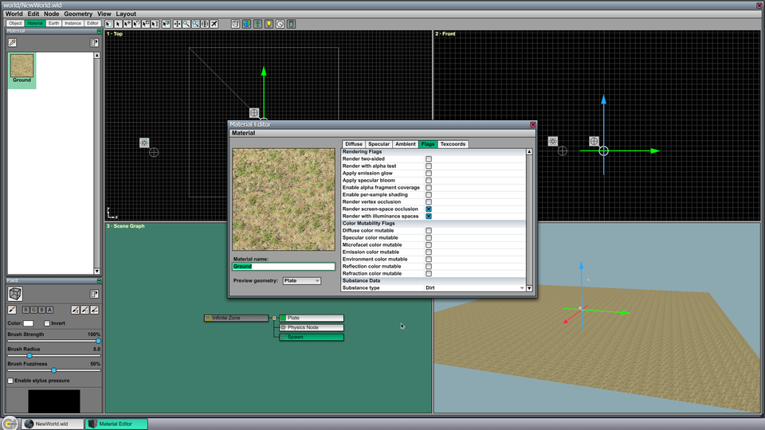
The player can be stopped from falling forever by using a special volume called a physics space. A world may contain a single physics space that defines the absolute boundary of the entire physics simulation. Every world should have a physics space to prevent objects from unintentionally leaving the world and flying through the air forever.
Select the Physics Space tool from the Physics Page, and drag out a box in the Top viewport that extends well beyond the edges of the ground plane. In the Front viewport, use the Resize Tool to move the bottom side of the physics space downward a little bit so it's not at the same vertical level as the ground. The editor should now look like Figure 11.
{kind=link}
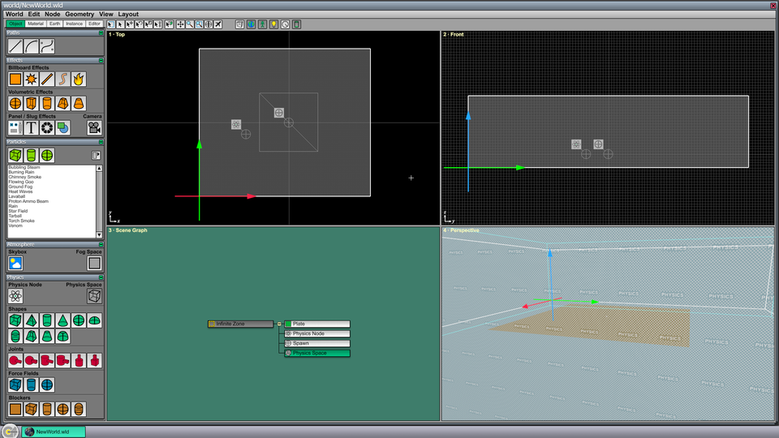
Before the physics space has any effect, the physics node that we created earlier needs to be connected to it. Double-click on the Physics Node in the Scene Graph viewport to open its Node Info window, and select the Connectors tab. The list of Available Built-in Connectors contains a single item named %Physics. Double-click on this connector to assign it to the physics node. The Node Info window should now look like Figure 12. Click OK.
{kind=link}
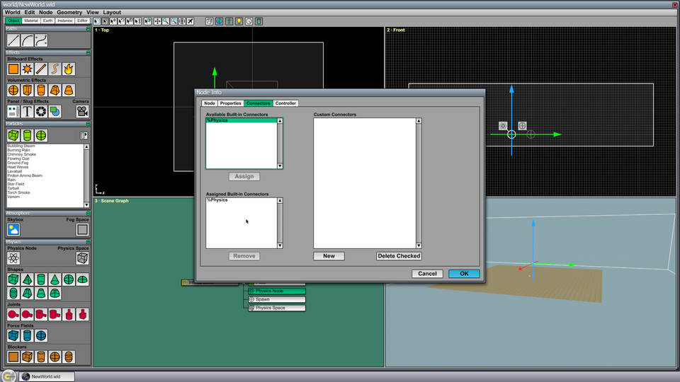
%Physics connector has been assigned to the physics node.Select the Connect Tool at the top of the World Editor window or use the shortcut key 5. The %Physics connector should now appear as an attachment to the physics node. (If the physics node accidentally became unselected, then just click on it in the Scene Graph viewport.) Click on the %Physics connector to select it, and then click on the physics space in any viewport. With the %Physics connector and physics space both selected, type Ctrl-L to link them together. This is the shortcut for the Connect Node command in the Node menu. The editor should now look like Figure 13. To stop it from obscuring your view, you may want to type Ctrl-H to hide the physics space at this point.
{kind=link}
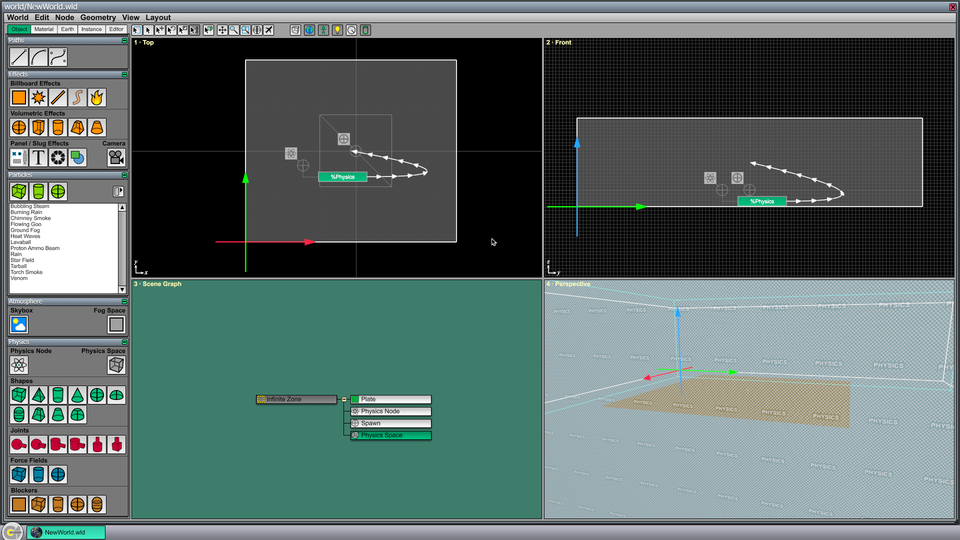
%Physics connector.Type Ctrl-P to play the world. As the player character walks around, you can now hear footsteps. If you walk off the edge of the ground plane, then the player dies as soon as the character's position leaves the physics space.
A game can take whatever action it wants when a rigid body leaves the physics space. The engine calls the RigidBodyController::HandlePhysicsSpaceExit() function when this happens, and custom code can be implemented in a subclass of the RigidBodyController class. By default, any rigid body is immediately deleted when it leaves the physics space.
Step K: Add a Skybox
Up until this point, the sky in our world has been nothing but the solid clear color that we specified earlier. Now, we're going to add a skybox, which consists of a cube rendered at infinity with a sky texture projected onto it.
Under the Object tab in the column of tool pages, find the Atmosphere Page, and select the Skybox tool. In the Top viewport click anywhere to place a new skybox node in the world. Like everything that's rendered at infinity, the position of the node doesn't matter, so it's a good idea to place the skybox node outside the world's geometry so it doesn't obscure anything else and it can be easily found. The editor should now look like Figure 14.
{kind=link}
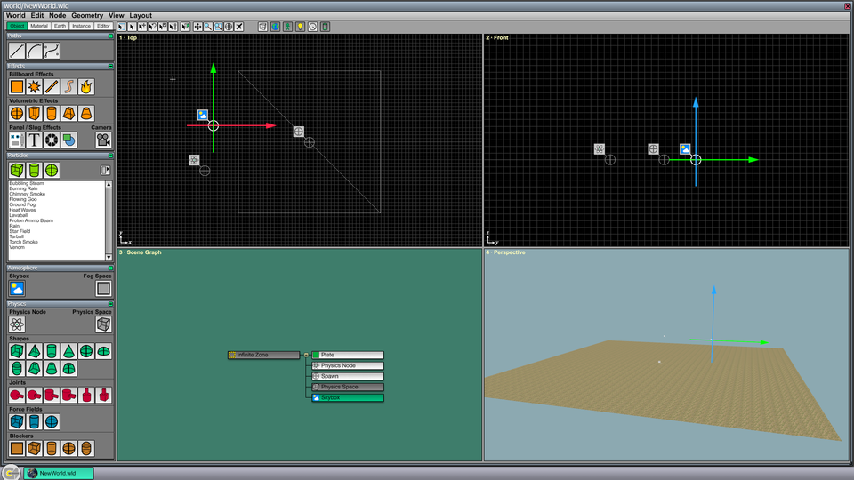
With the skybox node still selected, type Ctrl-I to open the Node Info window. Under the Skybox tab, check the box next to Render above horizon only because we are going to select a set of skybox textures that are designed to cover only the top half of the entire skybox cube.
For the Positive X texture map name setting, click the button with three dots on the right side of the window, navigate to the Data/The31st/sky directory, and select Cloudy1-A.tex. For the next four settings, do the same thing and select variants -B, -C, -D, and -E of the same Cloudy1 texture maps. This skybox does not have a component for the Negative Z texture map name, so leave that setting blank. The Node Info window should now look like Figure 15.
{kind=link}
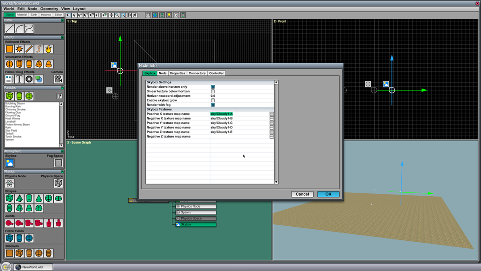
Click OK to return to the editor. One final step is necessary before the skybox will be visible. Double-click on the Infinite Zone node (or select it and type Ctrl-I). Then check Render skybox in this zone in the Node Info window and click OK. If you look upward in the Perspective viewport by right-clicking and dragging vertically, you should now see the sky above the horizon, and it should smoothly blend into the clear color that we previously chose below the horizon.